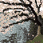
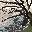
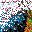

My brother, Jon Swast, is living in Japan and has posted some very
beautiful pictures of the cherry blossoms there and in Korea. I found
this one to be particularly
beautiful and decided to use it as a reference for practicing
pixel art.

I had been itching to draw some more pixel art, so I used this photo as
a template. For this 64 pixels by 64 pixels image, I used colors from the
photo itself for the color palette.

I think it turned out well. This is actually the sixth picture that
I drew using this photo. I also drew it at 32 pixels by 32 pixels with the
same color palette.

And at 16 by 16 pixels.

For the other drawings, I drew them at the same three sizes, but used
the color palette bundled with Pixaki,
which is the app I used to draw all of these images.



Overall, this was a fun project. It was quite relaxing to draw these on
the plane and just before bed time. The 16 by 16 pixel art trees are
difficult to tell what they are, but it was nice to start there since
it helped me choose the colors to use. The drawings appear in this article
in the reverse order that I drew them.